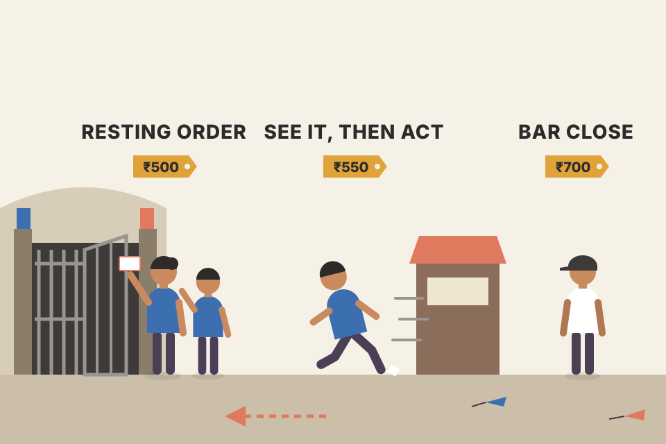
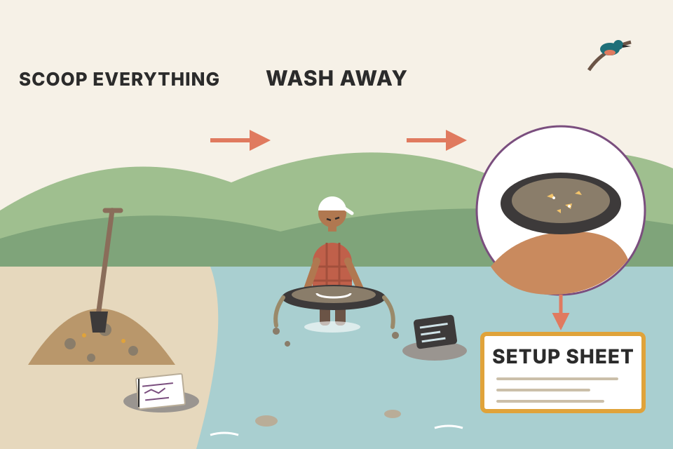
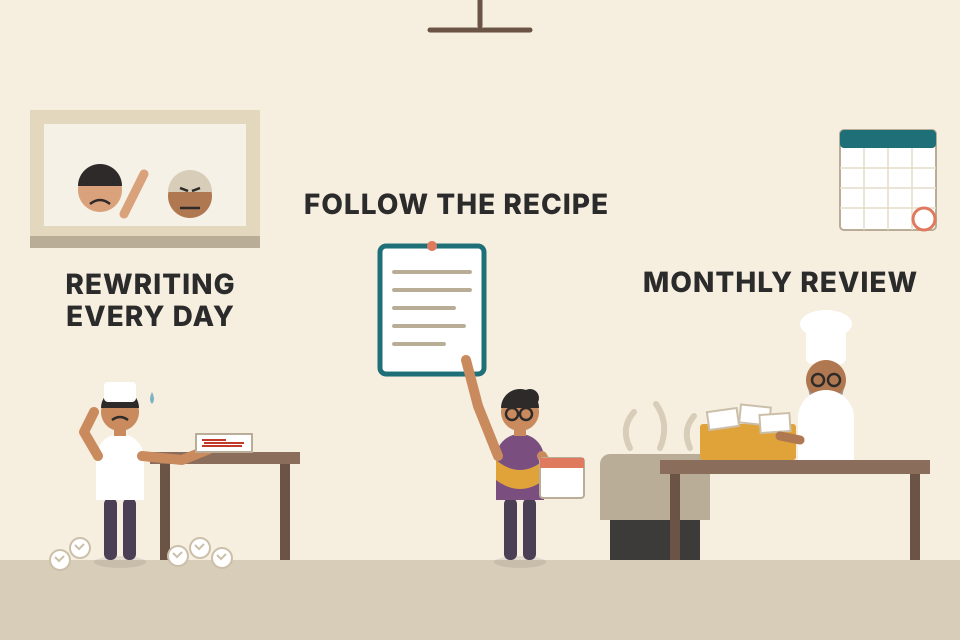
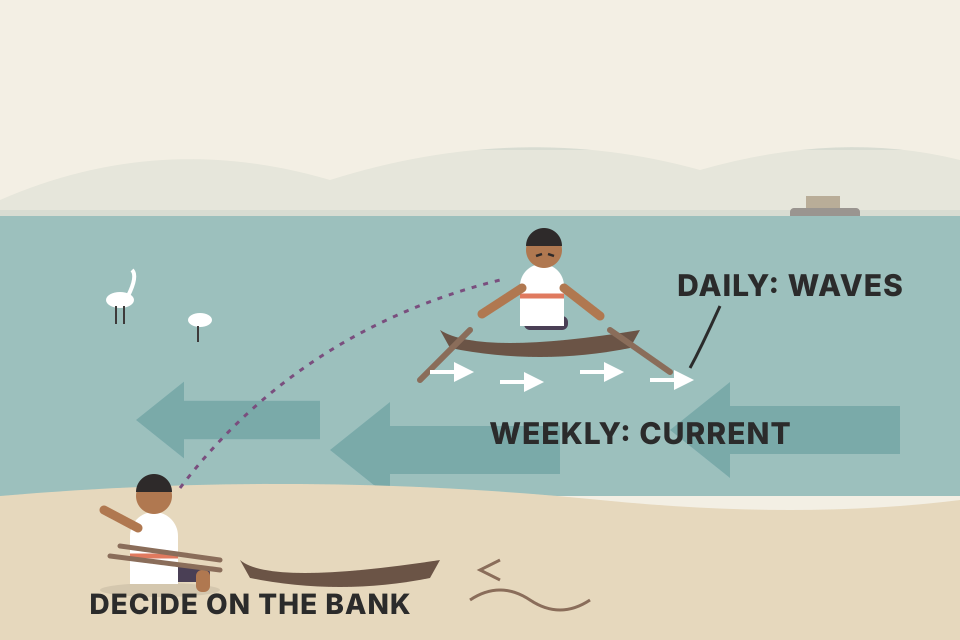

A price sits in a narrow band for weeks. Then it pushes out. That push is a breakout, and it is the last pattern in this course. But most of the chapter is about what comes before any trade: a written plan, a research journal and a steady routine.
It also covers bigger and smaller charts, exits, risk, and where ideas come from. Every price chart on this page is simulated. It is built to show one idea. It is not proof about real markets.
Picture a share that has done nothing for six weeks. It moves between ₹480 and ₹500, up and down, again and again. Sellers appear every time it reaches ₹500. Traders call this sideways stretch a range.
Then one morning it trades at ₹503. The sellers at ₹500 are gone. Price has left the range. That move is a breakout. If it holds, a new climb may start, and you want to be on it.
It sounds easy. It is not. Many breakouts fail and fall straight back into the range. Prices jump around wildly at the break. And you must decide how to buy. Do you place an order early, buy when you see the move, or wait for the day to end?
Grimes asks you to answer those questions in writing and then test them on old charts. That is the breakout part of this chapter. It is short.
The longer part is about you, not about charts. Grimes says a pattern is only useful if you have a written plan and follow it. So the chapter teaches you to write that plan.
You also learn how to keep a notebook of ideas and how to use a bigger chart. Then come exits, staying alive after a bad loss, and where new ideas come from.
| Word | What it means, in plain words |
|---|---|
| Range | A market that moves sideways between a high price and a low price. |
| Trend | A market that keeps moving mostly one way, up or down, for a while. |
| Level | A price that matters, such as the top of a range. A breakout happens when price moves past it. |
| Breakout | Price leaves a range and may start a new trend. |
| Bar and timeframe | A bar is the drawing of one slice of trading: its open, high, low and close. The timeframe is how long each slice is, such as a day or a week. |
| Stop | The price where you give up and get out. You pick it before you enter. |
| R | The money you planned to lose if the stop is hit. A win of 2R made twice that amount. |
| Edge | A real advantage that repeats. Over many trades you come out ahead of plain luck. |
| Backtest | Trying your rules on old price data, to see how they would have done. |
| ATR | Average true range. It tells you how far price usually moves in one bar. |
| Setup and trigger | The setup is the scene that makes you start watching. The trigger is the exact event that makes you buy or sell. |
| Trading plan | Your written rules: what you trade, how much you risk, how you get in and how you get out. |
This is a workbook, so the homework comes first (sections 02 to 06). Then come thirteen short essays (07 to 19) that explain the thinking behind the homework. The breakout itself lives in section 02.
The chapter has two halves. First come five short exercises. The book calls them Sections 1–5, and "S1" below means Section 1. Then come thirteen essays from Grimes' blog, grouped under four headings. They explain the thinking behind the exercises.
The chart below shows how the pieces link up. "M4" means Module 4, which is chapter 4. "TF" is short for timeframe, and "MTF" for multiple timeframes.
Think of what you can already trade after the earlier chapters. You can trade a trend while it is moving. A trend is a market that keeps going mostly one way. You can trade when a trend may be ending. And you can trade inside a range, a market that moves sideways between two prices.
One case is missing. What do you do when a market leaves its range and starts a new trend leg? That move is a breakout, and it is the last pattern of the course.
Grimes says the tool set is now complete. It is the base for any directional technical trade. Directional means a bet that price goes up or goes down. Technical means the bet comes from reading price charts.
The module has four jobs:
Writing a plan does not promise success. But building it and revising it makes you think hard about your results and your problems. Grimes calls it one of the best tools for moving toward steady profits.
You can bring other timeframes into the plan in two ways. You can open several charts. Or you can stay on one chart and work out what the other timeframes are doing from its patterns.
The drawing below puts each pattern of the course on one price path.
Grimes lists only the four market situations. Matching each one to a module is my own summary of the module intros (M4 pdf p156, M5 p182, M6 p209). "Anti" is the name of the Module 5 pattern.
A toolbox with four drawers. One is for trends in motion. One is for trends getting tired. One is for sideways markets. The new one is for the moment a sideways market wakes up.
The rest of the module is the workshop rules. When may you open which drawer? How much wood may you cut? And how do you write all of that down?
Where the picture breaks: a real tool does the same job every time. A chart pattern only tilts the odds a little.
"Buy the breakout" is not a rule. Which breakout? Past which price? Bought how? Until you answer, you have nothing you can test.
So the task has two steps. First, write a rule set for the exact type of breakout you will trade. Second, run a careful manual backtest, bar by bar, the same way as in the earlier chapters.
Track your P&L carefully and in the same way every time. P&L means profit and loss. The goal is to see what edge the pattern may have. An edge is a real advantage that repeats over many trades.
Grimes warns that this pattern is harder to test than the earlier ones. He gives three reasons:
You must answer at least these three before the test begins:
Here are the three ways to execute:

A crowd pressing on a gate. The level is the gate. "How will I execute?" asks where you stand.
You can wait at the gate with a ticket. That is the resting order. You can run over when you hear it open. That is "see it, then act". Or you can arrive after the crowd has settled. That is the close of the bar.
Each spot gives a different price and catches a different set of gate openings. Where the picture breaks: a real gate stays open. A price level can slam shut again one bar later.
Now try it. The tool below is a manual backtest you can step through. First, a few words it uses:
The box below lists the exact rules the tool follows. They are my example, not Grimes'. It only buys. Results are counted in R, the amount you planned to lose. A result of +2R means you won twice your planned risk.
The three ways to execute do more than give different prices. They pick different trades.
The resting order catches every poke above the level. That includes pokes that turn back down inside the same bar. Waiting for the close skips those fakes. But on the real breaks it pays a worse price.
Now look at the "assume the worst" rule for the entry bar. It is Grimes' second warning in action. A finished bar does not show the order of events inside it. Did price hit your stop before your entry, or after? You cannot tell. So the tool counts it as a loss.
Raise the bps slider. Watch how much of a small edge the spread eats. At breakout points that cost is at its widest.
One market proves little. So the next tool runs the same rules over 150 simulated markets and adds the results together.
This box is not in the book. I added it.
Random walk. No rule can have an edge here. Set the cost slider to 0. The resting order and the close rule then land near 0R. They sit within about two ± of it. The ± is one standard error, which is the size of plain luck in that average. The table calls it SE.
"See it, then act" loses about 0.1R even at zero cost. It pays 0.2 ATR more on a 2-ATR risk. That is all a slow reaction costs. Costs then pull every row down.
Ranges then trends. Here I built trends that start after ranges. So plain breakouts make money by construction. That is not proof about real markets.
The surprise is the "quiet first" filter. It sounds sensible, yet in my runs it loses. Why? Most quiet bars sit inside ranges, where 20-bar highs keep failing. The few breaks that start a trend come once per range.
So a formation rule can pick exactly the wrong trades. It also cuts the sample to about a quarter. Both are Grimes' warnings about formations, now measured.
One note on how the bars are built. Each bar's high and low are the extremes of a random path between its open and close. That makes a resting order at the level a fair fill.
intraday_swing_playbook.md).backtest_results_summary.md).breakeven_move_fyers.md). Intraday means in and out on the same day. Delivery means you hold the shares overnight. That is before the wider spread at the break.Everyone tells you to "follow the plan". Fine. Where is it? If it is not on paper, there is nothing to follow.
Grimes calls a good trading plan an essential tool for a professional trader. He starts with four things it does:
Complete. In the ideal case you could hand your plan to someone else. With some training, that person could copy your trading closely. Your results will be judged by how well you follow the plan. So a vague plan is no help at all.
A plan may still have discretionary parts. Those are parts where you decide by eye and not by fixed rules. They are allowed. They do make the plan harder to copy.
Usable. If the plan is too detailed, you will ignore it. If it is too big, you cannot revise it. Then it stops matching how you really trade.
That is where the danger starts. You tell yourself it is fine to skip a rule, because you no longer trade that way and never updated the plan. That thought opens the door to serious breaks in discipline.
Grimes says the same balance applies to all record keeping in trading. There is no single answer. You must know yourself. Most people do well with more structure, but it has to respect your personality.
Someone with an accountant's mind will not keep records the way a painter does. The plan must speak to your own mind. That is why one-size-fits-all plans tend to fail. Finding the right depth of detail for you is one of the first planning tasks.
Grimes thinks most traders need three plans. He covers the second and third in depth. The first is a business plan for your trading as it fits into your life. It should cover:
A good Plan 1 often includes family, spirituality, exercise, health and diet. It is an operating plan for you and your life as a business.
It does not include the specifics of your trading method. Typical length: 10–25 pages.
Plan 2 guides how active you are and how much you risk. It has four parts:
The goals are broad. You cannot force trades, so you will land above or below them. You also cannot set them well until you understand your system and your edge. That is why the plan gets refined as data comes in.
Be as specific as possible. These are rule sheets, not suggestion sheets. Only the goals section is looser, because normal market swings will move your results around.
The CRG sheet points to setup sheets. Lean toward writing too much. You may reread a sheet years later, and a complete one is faster to understand. Many traders write them as if teaching a third person to trade the system.
Every sheet needs these four sections:
A sheet can go deeper. Grimes lists seven optional sections:
Here is the test for the discretionary part. Lay each real trade beside the sheet. You should be able to say one of two things: "I followed my rules" or "I broke this rule".
Start over from scratch, even if you already have some version. Decide what you want. Then work bottom up.
Expect a good plan to take at least a few weeks. You write it, rethink it, and go through several versions. Without a written plan, Grimes says, your chances of success are much smaller.
Refine each setup sheet until it matches exactly how you trade. Every condition you consider belongs on it: technical, fundamental (facts about the company or the economy), news, even feelings. Do not trade until this is done.
Starting the CRG sheet at all puts you ahead of most developing traders. You will refine it as you go.
The calculator below turns a CRG risk line into a number of shares.
| Example CRG sheet and one setup sheet (my illustration in Grimes' format, not from the book) | |
|---|---|
| Class | Swing breakouts, NSE cash stocks, daily chart |
| Risk | 1% of equity per trade · stop trading for the week after 3 full losses · month: ???? |
| Goals | Activity: 2–6 trades a month. Profit: ???? (unknown until the backtest and paper trades show what the edge is) |
| Setups | Sheet A: 20-day high breakout after a quiet period |
| A · Setup | Nifty above its 200-day average. The stock's 5-day ATR is below 0.8 × its 40-day ATR. Price is within 1 ATR of its 20-day high. |
| A · Trigger | Daily close above the 20-day high. Enter at the close. |
| A · Stop | 2 ATR(20) below entry. Never moved further away. |
| A · Profit taking | Sell half at 1R. After that, trail the rest under the prior day's low. Time exit after 15 days. |
| A · Notes | Skip on results days. Backtest notes: ???? |
Three words from that table. A swing trade lasts days to weeks. ATR(20) is the ATR of the last 20 bars. To trail means to keep moving your stop up behind a rising price.
A restaurant. The business plan is why the restaurant exists, its hours and its fire-escape plan. The CRG sheet is the kitchen's rule board. It says which dishes we serve and how much we can spend on each.
Each setup sheet is one recipe card. It is written so a new cook could make the dish exactly the same way. Where the picture breaks: a recipe followed well gives a good dish every time. A setup followed well still loses on many trades.
The CRG sheet sets risk in money, not in shares. So every trade costs the same when it fails.
The calculator turns that money into shares:
shares = risk ₹ ÷ (entry − stop)
A stop twice as far away means half the shares and the same rupee loss. That is why Grimes says most sizing belongs on the CRG sheet, not on each setup sheet.
A written trigger also lets you audit yourself. Either the trade matched the card, or you broke a rule.
backtest_results_summary.md).using_equations_to_trade.md suggests 0.5–1% risk per trade. So you already have evidence for a CRG risk line.You notice something odd on a chart at 11 PM. By morning it is gone from your head. A research journal is how you stop losing those thoughts.
Grimes asks you to start one now. You will use it, in some form, for the rest of your trading career. Nobody can tell you the right format. It has to fit you and your life. Here are his thoughts:
Where do those flashes come from? From deep work and long exposure to the data. Grimes calls the journal a structured tool for reaching your intuition, even during heavy number work. It keeps you in the flow, ready for the flash.
Start now, today. Take a piece of paper. Write down a few ideas from the course that you want to investigate. What matters is that you do it.

A gold panner. The paper notebook is the shovel. Scoop everything and do not judge yet. The electronic list is the pan. It washes most of the gravel away.
What is left in the bottom, after testing, becomes a setup sheet. Where the picture breaks: gold is easy to tell from gravel. A good idea looks like a bad one until you test it.
Notes/trading folder already works like the electronic end of the funnel. Ideas from videos and books went in: the VWAP course, the Currency Pros checklist, Stochastic RSI + MACD. VWAP, Stochastic RSI and MACD are common chart indicators.backtest_results_summary.md). What is missing is the dated paper end that records the first observation.Many traders say you must check the weekly chart before you trade the daily one. Is that true? Grimes does not ask you to believe it. He asks you to test it.
Looking at more than one timeframe is called multiple timeframe analysis. The project is to find out what it might add to your trading and your pattern reading. It might also add nothing. Here is his suggested method:
Grimes gives two examples for step 3. Both use the pullback, a short dip against a trend before the trend carries on.
In step 7, the baseline is what the market returns on an average day, with no rule at all. A filter is an extra condition that removes some trades.
The goal is twofold. You learn how much, or how little, timeframes influence each other. And you sharpen your chart reading.
The tool below shows the leak from step 6. Watch the last weekly candle as you tick the box.
A weekly bar is five daily bars glued together. On Tuesday, the honest weekly bar has only Monday and Tuesday in it.
A charting package that shows the finished bar already knows Friday's close. Take a rule like "only buy if the week is up". With the finished bar, that rule quietly uses the future.
Drag "today" to a Monday or Tuesday and tick the box. The last weekly candle jumps to its final shape.
This test is not in the book. Here is the rule it tests. On each day except Friday, buy at the close if the weekly bar is up. Sell at the next day's close. On a random walk the true edge of every rule is zero.
"The finished week is up" partly means "the days after today went up". So the filter picks days that are followed by gains.
That is not an edge. It is tomorrow's answer copied into today's question.
The honest row uses only the days already printed. It sits near zero, like the baseline. Grimes tells you to compare against the baseline and the unfiltered pattern. That comparison is exactly what exposes the leak.
backtest_results_summary.md).The readings come from Grimes' earlier book, The Art and Science of Technical Analysis: Market Structure, Price Action, and Trading Strategies (Wiley, 2012).
The page numbers are printed pages of that book. They are not pages of this workbook PDF. That book is not in your library. The last column shows where this page covers the same idea.
| Topic | Printed pages (2012 book) | Where this page covers the idea |
|---|---|---|
| Breakouts | 174–188 | 02 (backtest) |
| Breakout examples | 337–345 | 02, 18 |
| Multiple timeframe analysis | 213–230 | 05, 13 |
| Trade management | 231–253 | 14–17 |
You have heard the slogans. Fail to plan and you plan to fail. Plan the trade, then trade the plan. Grimes finds them catchy, and then asks the harder question. Is your plan good enough?
Does it have enough detail? Can it do everything you need? If not, fix it today.
He splits planning into two parts:
Traders often write a trading plan. Few write the business plan. You need both, or you have not really planned.
Grimes saw this while coaching a few traders. Most had some experience. They already knew a lot about what not to do. Yet they fell short on the business side.
Without that big-picture plan you lack guidance and vision. It is as much about you as about trading. Who are you? What is your purpose? How does trading fit your routine and your life? How will you grow?
A good one is a big document, perhaps ten to twenty typed pages. It changes as the business grows. Note that Section 2 gives 10–25 pages for the same Plan #1.
The business plan has two purposes:
It controls your behaviour. It says clearly what you will do and what you will not do.
It describes your business to investors. Maybe you will never trade anyone else's money. Work at that level anyway.
Be as careful with your own money as with a client's. You are your own client, and you owe that client a lot.
Picture the path a trader walks. At one end is someone who just learned to read a bar chart. At the other end is someone who has traded for years. That person may even make some money, but lacks the success or the steadiness they want.
Anywhere on that path, refining the business plan is time well spent. If you have none, start today.
A shop owner who has perfect recipes but no opening hours, no accounts and no plan for a fire. The recipes are the trading plan. Everything else is the business plan.
Grimes' coaching clients had good recipes and no shop. Where the picture breaks: a shop without accounts gets a notice from the tax office. A trader without a business plan gets no warning at all.
backtest_results_summary.md has a "Next" list: paper trade, fix survivorship, keep the 200-DMA filter. That list is the seed of the edge-development part of a business plan.A truck driver drives trucks. A baker bakes. A teacher teaches, and a dentist works on teeth. The job title tells you the job. So a trader trades, right?
Wrong, says Grimes. "Trader" is a misleading title, and believing it leads to overtrading. You look at your markets and nothing shows an edge. But you are a trader, so you put on a "boredom" trade. It ends badly.
Think of the job in a new way. Your job is placing the trades your methodology and system call for. Do that, and many discipline problems solve themselves.
Your job is not to make money. It is not to put on trades. It is not to catch every move.
The market may make a huge move that your system never signalled. That is fine, depending on your style. Your job is to follow your system and do what it says at the right time. Your job is to be a disciplined trader.
Grimes often sees developing traders change the system after each trade or two. Then nobody can tell if the system works, because it never stays the same. In the worst cases it changes with every trade.
He compares trading psychology to an unruly child. It soon finds an "out". Any action can be justified by saying the rules now include it. His answer to that is one word: no.
Grimes adds a short aside on risk management. He thinks poor risk management is one of the main reasons individual traders fail. The best he ever saw was at the Nymex, the New York Mercantile Exchange.
When a trader there started having trouble, he got a little louder. You could almost feel a storm cloud over his desk. Soon the risk manager appeared behind him and gently tapped his shoulder. He invited the trader to step away and talk.
Sometimes the trader came back a changed man. Sometimes he was in a much better frame of mind the next day.
Too many at-home traders blow out their accounts because they have no boss. A prop trader trades a firm's money, not his own. Grimes says a poorly managed one is in basically the same spot.
So look at your recent trades. Suppose you had to justify them to a boss. Would you get a bonus, or would you be fired?
| Hat | What it does | What it never does |
|---|---|---|
| Trader | Places the trades and follows the system. It is a "dumb" role on purpose. If something seems wrong, the trader writes a note for the developer. | Changes, overrides or ignores the system. |
| System developer | Analytical and unemotional. Watches performance. Tweaks after a proper amount of time, always trying to make the edge a bit stronger. Then hands the new version to the trader. | Hands over a system found on a website or a chat-room tip. Reacts to yesterday's emotional results. |
| Boss | Accountability. Tough but nurturing. Helps the trader and the developer grow. Takes a serious look at what you are doing, and fires you if you cannot keep the discipline. | Lets broken discipline slide. |
Grimes' example of a chat-room tip is someone telling you to buy at some Fibonacci extension. That is a price target drawn from a set of famous ratios. The developer only hands over something he has confidence in.
Wear one hat at a time and switch slowly. How often you switch depends on how you trade:
Do not stay at your desk until 7 PM rewriting the system every day either. The developer needs more data, and should not react to one emotional day.
Your system may be technical, fundamental or astrological. Grimes hopes it is not the last one. Whatever it is, be clear on when you trade and when you may tweak.
And if you cannot keep this discipline, you cannot be a trader. So put on the boss hat now and then, and take that serious look.
Why must the developer wait? The next chart is not in the book. I added it. It shows how many trades it takes before an edge shows. In its readout, the median is the middle run: half the runs did better and half did worse.
Each line is the same system. Nothing about it changes. Only the random order of wins and losses differs.
Take a real edge of +0.2R per trade. After 30 trades it still shows as a loss in about one run in six. The readout counts 4,000 runs. And a system with no edge at all still shows a profit about 40% of the time.
A developer who changes the rules after every bad week is reacting to this noise.
Here is the maths in plain words. Call the number of trades N. The edge adds up in step with N. The spread made by luck grows only like √N, the square root of N. So only many trades pull the two apart.

A restaurant where the cook rewrites the recipe after every complaint. After a month nobody knows if the dish was ever good.
The owner is the boss. He makes the cook follow the recipe. The head chef is the developer. She reviews it monthly with all the feedback in hand.
Where the picture breaks: in a kitchen these are three people. In trading all three are you.
using_equations_to_trade.md sets your pass bar: positive expectancy over at least ~100 trades. Expectancy is the average result per trade. The fan chart shows why fewer trades are not enough.price_physics_basics.md note says drift grows with t and noise with √t. Here t is time. It is the same maths as this chart, with trades in place of days.Your pattern works about half the time. The next signal appears. A small voice says: maybe skip this one? That voice is the problem this essay solves.
"Process" is a buzzword, but a useful one. It covers everything you do, and it reminds you to do it the same way each time. With a defined process the job is plain: follow the process.
The plan is part of it, but a process goes further. It covers everything you do around markets:
Somewhere in it should be one instruction: follow the trading plan.
Trades often set up against conventional wisdom, which is what most people believe at the time. Grimes lists trades that would have looked silly when they appeared:
Each would have been hard to defend on CNBC, the business news channel. And if one had failed, blaming yourself would have been easy. "I should have seen it."
His approach is to treat narrative, news and conventional wisdom as a possible input to the process. Narrative means the story people tell about a market. Then ask one thing. Can you measure how these inputs affect your trades? Only then do you know if they deserve attention.
If you cannot measure it, look at what you are doing. You have a method. Then you bolt an extra influence onto the end of it. Nobody has measured it and you do not understand it. So how can it help?
It is one more degree of freedom. That means one more thing in your method that is free to change. The more of those you have, the easier it is to fool yourself.
Grimes calls his life's quest simplifying and removing degrees of freedom. He says that is where he found much of his edge. He sees the future only through a cloudy glass of uncertainty. His best guide is a slight statistical tilt, a small lean in the odds.
So what matters more than the process? Nothing. And the answer to conflicts is: work the process.
So he can ignore the narrative and the crowd. That makes him brilliantly contrarian at times, without trying to be. A contrarian bets against the crowd. At other times he is a brilliant trend follower. He gets in early and rides most of a move.
He knows not to enjoy looking brilliant too much, because he looks equally dumb at other times:
It is unpleasant, and it cannot be avoided. Process is the hub that holds the wheel together. In a very real way, it is all there is.
The next tool is not in the book. It deals 100 trades from one system with a small edge. Deal a few times and watch the streaks.
With a small edge, streaks are normal. Take a system that loses 60% of its trades. In 100 trades, its longest losing run is typically around 7. The readout shows the run for this deal.
Winning runs that make you feel like a genius turn up too. Neither kind of streak says anything about the system.
Now suppose you judge each trade by the story around it, such as the news or what CNBC thinks. Then you add a new rule after every streak. That is one more degree of freedom, never measured.
The process ignores the story and keeps dealing.
backtest_results_summary.md).You are sure a stock will go up. But how sure, and why? Grimes says good trading is largely about asking the right questions. Many serious mistakes come from accepting our own ideas at face value.
Here is his checklist. Each question is explained below the list.
Every decision rests on an idea. Even a signal from an algorithm, which is a fixed set of rules, rests on one. The idea is that something should happen after certain conditions are met. At the other end, maybe you trade a hunch.
Where does your idea come from? Someone on social media? Is it fundamental, macro or technical? Macro means the big economy: interest rates, growth, currencies.
Do you fully understand the idea and its source? Can you repeat it, again and again? Good trading programmes are built on consistency. So the idea must be repeatable.
This is less simple than it seems. You think something is going up, so you buy. But ask more:
There is a second half to this question. Does your position actually capture the move?
Sometimes that is easy. You expect Nasdaq futures to pass the day's high in the next 30 minutes. So you buy Nasdaq futures.
Sometimes it is not. Say you expect stock volatility to rise. You could trade VIX futures, a leveraged ETP, or options on either. The VIX is an index of expected volatility. An ETP is a fund that trades like a share. Do you truly know how these products respond?
Or you think Delta Airlines will beat its competitors. Its ticker is DAL. Is buying DAL the right play? The tool below works this one out.
This means more than knowing where the stop is. What is the worst that can happen? How likely is it? Accept the worst case first. Then think about the smaller risks. Do not assume your risk equals your stop.
This one is hard, because you are asking about what you do not know. Many people find it hard to think this way. But it is one way traders grow. Always ask. Always be learning.
More and more, investment writing studies cognitive mistakes. These are errors built into how the mind works. Our sense of patterns, risk and probability is flawed at a basic level.
You cannot fix most of these biases. So ask how to work with them, and how to limit the harm they do.
The five questions will not solve every problem. But they point toward answers to the most serious ones.
Long DAL alone earns two things added together: the sector move and DAL's extra. Long means you bought it.
Your idea is only about the extra. But the position also bets on the whole sector.
Now pair it. Go long DAL and short an equal amount of its competitors. The pair earns roughly the extra and nothing else.
Say the sector falls 10% and DAL beats it by 3%. You were right, and you still lose 7% on plain long DAL. That is what "does your position capture the move" means.
Pairs carry their own costs and risks. Your pairs backtest lost even before costs.
trading_equations.md eq 14 gives the expected move from implied volatility. That is the size of move that option prices are betting on. It is one way to answer question 3 before an event.Making money in the market is easy. Anyone can place a winning trade. You need no skill and no edge for one.
Making steady money is the hard part. Doing it month after month and year after year needs a process.
A process defines what you will do, how, and when. It also defines how you'll evaluate it and how you'll modify it. A full trading plan includes all of that. So the plan is a guide to your process, and discipline is "simply" following the plan.
Beginners often have no plan and no process. But experienced traders can still smooth some rough edges. It is an ongoing journey. Grimes offers five questions:
On question 1: the process serves the edge. If you have no edge yet, aim the whole process at developing one.
On question 5, Grimes names three warning signs of a break in discipline. You change plans. You look at an indicator you do not use. Or you trade a different timeframe.
Make the plan realistic. An 80-page document full of rules you will not follow is pointless. Everything in it should be meaningful and real.
But a rough outline is not enough either, especially for developing traders. Balance detail against ease of use.
Then sit down with pen and paper. Write freely on these questions. After that, reread your plan with fresh eyes:
Process makes us better and leads to consistency.
The chart below is not in the book. It puts numbers on question 4. How many trades should you look back on when you judge a system?
This is my model, not market data. A system earns +0.2R per trade for 300 trades, with 40% wins of +2R. Then it quietly breaks. From there it loses 0.1R per trade, shown as −0.1R, with 30% wins.
You judge it on a rolling average. That is the average of only the last W trades, worked out again after each trade. You raise the alarm the first time it drops below zero.
I ran this 400 times and added the runs together. A short window raises false alarms on the healthy system almost every time. You would "fix" a system that works.
A long window rarely raises a false alarm. But it keeps trading the broken system for many more trades.
That is Grimes' warning put into numbers. Too short and you analyse noise. Too long and you correct too slowly. The right window depends on how many trades you make a month.
using_equations_to_trade.md 5-step workflow ends with a kill switch, a rule that stops all trading. This chart is a way to choose its window, so you do not have to guess.Grimes remembers his first trades. There were months of feverish study. There was the thrill of filling in brokerage forms and getting the first statements in the mail. Then came the rush of phoning in the first orders.
He had no live prices to watch. If he had, he says, he would have been glued to every tick. He was counting the seconds until a fountain of money flowed into his account.
Then came the botched trades and the painful losses. Some were taken well past his stop. Nothing worked, and the emotional roller coaster was extreme.
He never liked gambling, because he can feel that the odds are against him. But he could see how the rush could become addictive. Even rare, partial success pulls you back.
It came after a long struggle. He put on a trade and, deep down, did not care if it won or lost. He had turned a corner without noticing.
He had found one of the keys to trading psychology: be unattached to the outcome of any single trade. That can feel scary, especially for developing traders.
Too many people come to trading for the excitement. Grimes acts out a mock interview. Why do you want to trade? "I want a fast-paced, exciting job where every day is a new challenge." He answers with a game-show buzzer. Next, please.
Professional trading is routine and, if all goes well, predictable. A friend of his compared it to bricklaying. Put down a brick. Add mortar. Smooth it. Next brick. All day, every day.
In the end there is a big wall. But laying each brick is routine. We need structure, routine and a method aimed at the repeating parts of market behaviour. We do not need excitement.
Grimes recalls Ed Seykota's line: Win or lose, everybody gets what they want out of the market.
Come for excitement and you will find it. But exciting trading and making money rarely overlap.
You can have whatever you want. So what do you really want?
The wall below is not in the book. Each click lays 20 more trades.
Each brick is one trade from the same small-edge system as section 09. Green is a win of 2R. Red is a loss of 1R. Bricks stack in columns of ten.
Look at any single brick and it tells you nothing. Look at the height of the wall after 200 bricks. That tells you if the system works. Caring about one brick is caring about noise.
Where the picture breaks: a real wall never gets shorter. This one drops a little with every red brick.
backtest_results_summary.md). So about four in ten bricks will still be red.Your daily chart says up. Your weekly chart says down. Which one do you obey? This essay is about that fight.
Grimes starts with a warning. Multiple timeframe analysis is close to a buzzword. In more than twenty years around markets, he has watched many techniques take the spotlight. Each time, traders hope they have found the key to steady profits.
His examples are neural nets, quantitative analysis, scalping and multiple timeframes. Scalping means very quick trades for tiny gains. Each fad fades when it does not live up to the hype.
There is no magic formula. There is only disciplined risk management, lined up with the market's very small statistical edges.
Still, these fads often carry real lessons. The lesson here: understand how trends develop and end on several timeframes. Then use that for an edge in some trades.
Market action is mostly random. Most markets offer no tactical edge most of the time. That means no edge for a short-term trade right now.
An opportunity is an imbalance between buying and selling, and it does not last long. Even when one appears, the other timeframes may add nothing. This is a tool for some situations.
One such situation is a trade against the higher-timeframe trend. Grimes shows two charts of crude oil futures on pdf p297.
Imagine you are long because the daily chart is in an uptrend. A green arrow marks it. Price has climbed from about 45 to about 60 since March.
The weekly chart is, quite literally, the bigger picture. It has been in a downtrend for a long time, from above 100 down to about 45. It may still be in one. The daily rally could be only a pullback before another weekly selloff.
What should you do? That depends on who you are, how you trade, and how you see risk. He gives three options:
All three are valid, and each has good arguments. The key is to decide before you trade. It has to be in your plan.
Other timeframes can also trigger entries. Grimes shows two charts of gold futures on pdf p299.
The daily chart shows a rather weak failure test near 1,220. It is a signal to go short. On its own it does not impress.
Now the weekly chart. It shows a pullback in a market that has slid for two years. Price is pressing on what looks like support near 1,150. Support is a price where falls have kept stopping. Grimes calls this one a multi-year level.
Being short into that pressure makes sense. So the weak daily signal gains weight.
Is the trade countertrend, against the trend? A failure test is a countertrend trade, and the daily chart was in an uptrend. But the trade goes with the trend on the higher timeframe.
Label it however you like. But be clear about the influences and about what you are trying to do.
The usual advice is never to trade against the higher-timeframe trend. Grimes sees serious problems with that advice.
His better plan has three parts. Learn to read market structure. Understand the flows that pull against each other. And have a clear plan for them. You may ignore them, use them to trigger entries, or use them to manage risk.
The demo below rebuilds both examples with simulated prices.
| Policy for a daily long against a weekly downtrend | What you gain | What you give up |
|---|---|---|
| Skip it | You avoid trades that fail into a weekly selloff | Every early entry at a weekly turn |
| Take it, manage tighter | Smaller damage if it fails | Part of the move if it is a real turn, and more stop-outs |
| Ignore the weekly | It is simple, and you trade one timeframe's tested edge | No protection from the higher-timeframe pattern |

A boat on a river. The daily chart is the waves. The weekly chart is the current. Rowing with a wave but against the current can work for a while.
The question is what you do about the current. You must decide that on the bank, not in the middle of the river. Where the picture breaks: a river's current does not turn around. A weekly trend can.
The weekly chart in the demo is built from exactly the same daily prices, five days per candle. So it holds no new information. It is only a different summary.
Longer swings stand out. Short ones disappear.
A daily uptrend of a few weeks is only two or three weekly candles. That is small enough to be a pullback in the weekly downtrend.
Which reading is right? You only know later. That is why Grimes asks for a written policy and not a forecast.
backtest_results_summary.md)."Cut your losses quickly." Every trading book says it. A reader wrote to Grimes and asked what it really means.
The reader's point was this. A pullback trader puts the stop where the pattern has failed. Is that not already cutting losses quickly? If you exit whenever a trade sputters, you create turmoil. You get out, and then it goes your way. The reverse happens too.
Would it not be steadier to set stops and targets from your risk rules, and then let the trade play out?
Grimes agrees fully. Trades need enough room. How much depends on the market, but it must reflect volatility. A wilder market needs a wider stop.
How do you measure that? He suggests ATR or another range-aware measure. Range-aware means it looks at each bar's full range, from its high to its low. He thinks this fits better than historical volatility.
Here is why. Historical volatility comes from the standard deviation of closes. Standard deviation is a number for how spread out values are. So it only looks at closing prices.
But your stop will probably be hit inside a bar, by a high or a low. A measure that never sees highs and lows is a slight mismatch for setting stops.
So a stop cannot sit inside the market's noise. His rule of thumb: stops closer than 1 ATR are probably too close, with a few exceptions. Beyond that, adjust for your style and your pattern.
Very close stops actually carry very large risk. A lot of marketing to beginners talks about "low-risk trades". Grimes calls that dishonest. If you size properly, no trade is low risk.
Grimes' conclusion: good risk management means the right stop, which is not always a tight one. If you understand probability, tight stops are very rarely good.
Cutting losses quickly means cutting them appropriately. For some traders that is minutes. For others it is weeks.
A key skill is letting markets move around. People who cannot do that get in, get nervous, get out, and get right back in.
Doing the right thing has two parts. First, you must know what it is. That means knowing how markets move, what works, and how probability rules your results. Second, you must actually do it, with perfect discipline.
These bars are built with calm closes but long wicks. A wick is the thin line on a candle that shows how far price went above or below the open and close.
Historical volatility only measures how far each close is from the last close. So it reports "quiet".
ATR takes each bar's true range. That includes the wicks and any gap. So it reports how far price really travels inside a day.
The Greek letter σ, sigma, stands for one standard deviation. Put one stop 1 historical σ below the last close, and another 1 ATR below it. Wicks touch the first far more often.
Slide the wick size and watch the two measures split.
Take a ₹10 lakh account. 1% risk is ₹10,000. The stock is at ₹1,000 and its ATR is ₹20.
A 0.5-ATR stop is ₹10 away. So you buy 1,000 shares. That is a ₹10 lakh position, your whole account.
Now the stock gaps down 5% overnight, which is ₹50. It jumps straight through your stop. You lose ₹50,000 = 5R, five times the risk you planned.
Try a 3-ATR stop, ₹60 away. You buy 166 shares. The same gap lands inside the stop and costs about ₹8,300, under 1R.
The probability readout uses simulated random-walk bars, added together over 20 markets. So it measures noise only.
trading_equations.md eq 10 (ATR) works the same sizing. ATR is ₹28 on a ₹1,450 stock. A 2-ATR stop is ₹56. With ₹10,000 risk that gives 178 shares.tori_trendlines_explained.md). Both sit inside Grimes' 2–4 ATR range from section 15.Ask a trader where they buy, and you get a long answer. Ask where they get out, and you often get silence. Grimes thinks we spend a lot of attention on entries, maybe too much. Here he looks at exits.
He sorts them into categories. You exit at a loss or at a profit. Each splits again:
This is not the same as "at a stop or at a target". A trailing stop is a stop that follows price as the trade wins. It is often a way to take profit.
The most important thing: have one. Know where you get out before you get in. Every trade needs a clearly defined maximum loss. You work hard never to exceed it.
Some styles of trading differ. If you trade one of those, Grimes says, you already know this lesson.
Bad things still happen. A nasty gap past your stop can cause a loss that is several times your planned risk. Grimes remembers a −4.5× loss in YHOO, the ticker of Yahoo. He lost four and a half times what he had planned.
Such events are rare. But they are why you never risk 10% of the account on one trade. 4.5 × 10% would be a 45% loss, a disaster. 4.5 × a sensible 1–2% is merely annoying.
Placing the first stop is an art. He thinks much of the stop advice online uses stops that are too tight. He has never seen anyone trade well with stops a few ticks wide. A tick is the smallest step a price can move.
His own initial stops usually end up around 2–4 ATRs from entry. Many traders find that uncomfortable. The fix is a smaller position. Taking losses may be the most important thing you do as a trader. So do it properly.
The initial stop is, ideally, never exceeded. But many traders move it closer fairly quickly.
A time stop also cuts risk. It acts when the trade does not move within a set time. You can tighten the stop, reduce the position, or exit completely.
Grimes has argued against reducing the position at a loss. He says it "deleverages" your P&L in the loss space. My reading: you cut size while you are losing, so the smaller position can win back less. He finds it works better to take whole losses that are smaller than the initial one. Your experience may differ.
Here is the key point. All the pieces work together:
Change one and the whole system changes. That is why a technique can work in one setting and not in another.
The simplest view: move the stop in when the trade does not go far enough your way quickly. And consider time stops.
Targets are usually limit orders. A limit order waits at a price you name and fills only at that price or better. Stops are usually stop orders.
Some markets trade 24 hours a day. Grimes likes to leave profit-taking limits working there. He may not leave stops working after hours. People do silly things after hours. He is happy to supply liquidity at the right price, which means being the other side of their trade.
Should you use targets, or let winners run? There are two schools, and they go against each other. He says the answer depends on your style. Trend traders must let profits run. Countertrend traders must take quick profits, usually at areas they pick in advance.
He has not found chart points more effective than a plain target. That target is 1× the initial risk on the other side of the entry.
Many traders use pivots or trendlines for targets. A pivot is a past turning point on the chart. A trendline is a line drawn along the highs or lows.
Grimes made tens of thousands of trades in his short-term years. Across them, he did not find those targets that effective. One exception for intraday traders: the day's high and low deserve respect. Consider the trade-offs of simplifying.
These are very effective in many kinds of trading. You can trail at a distance set by volatility. Or sometimes you trail very tight, more or less hoping to be stopped out.
That can give you a nice problem. You trail at yesterday's low, and the trade grinds your way week after week. You are forced to stay in and make more money.
But guard against hubris, which is too much pride. Often when this happened to Grimes, he was sitting in a climax move. That is a final, very fast run. Such moves tend to end dramatically. So ring the register and step away.
This is not every possible exit, but it is a start. For swing trading, he combines three things:
Consistency matters. But if you consistently do something that does not work, you lose money consistently.
Build a system with an edge that you can actually follow. Trade with the right size and risk. And monitor your performance.
Now manage one trade yourself, bar by bar.
Can a clever exit create an edge by itself? The next test is not in the book. It tries four exit plans on random walks.
200 random-walk markets, one random entry every 45 bars, so trades do not overlap. 3-ATR initial stop, 40-bar maximum hold, no costs. ± is one standard error, the size of plain luck in the average.
On a random walk every exit plan averages about 0R. Exits cannot make an edge where there is none.
What they do change is the shape of your results:
A 1R target gives a high win rate with capped wins. A tight trail gives many small losses and the odd big winner. The combination sits between.
That is Grimes' point that all the pieces work together. It also shows his warning: consistency without an edge loses consistently.
Choose the shape that fits your setup, trend or countertrend. Get the edge from the entry.
backtest_results_summary.md).intraday_swing_playbook.md).using_equations_to_trade.md Monte Carlo runs many random pretend futures. A drawdown is a fall from the account's peak. The test used a 45% win rate (+0.25R). Risking 6.8% per trade gave a 79% chance of a drawdown of 50% or more (≥ 50%).People keep saying that good risk management is a big part of trading. A reader asked Grimes what that means exactly. Is it keeping losses small? Something else? It was the first question he ever answered on his blog.
He sums up technical trading in three steps:
The list above is his (1), (2) and (3). Most developing traders stumble on step 3. So do many firms.
A common myth among retail traders, people who trade their own small accounts, is that risk management means keeping losses small. But many small losses add up fast.
Small, nearly certain losses drain the account steadily. Developing traders are often blind to the costs that feed the drain: commissions, fees, and paying the spread.
The root of risk management is this: make sure no one loss can take you out of business. That means two things.
First, size positions correctly. Too small is as bad as too large, because then you are not paid properly for the risk you take.
Second, watch for anything that could change how wildly the position moves. Most of us set size from the volatility we expect. If volatility turns out much higher, the position carries more risk than planned.
Often you can see this coming:
Such events are often priced into implied volatility. That is the size of move that option prices are betting on. So a quick look at implied pricing is usually wise.
Other shocks cannot be foreseen: acts of God, takeovers, surprise announcements, weather. They can cause tail losses, rare extreme losses many times the plan.
You usually cannot hedge them well. To hedge is to hold a second position that protects the first. These shocks are a cost of doing business. Trade long enough and you will meet some.
Risk management is also position management. First, exit at your initial loss point. No excuses. The market has told you that you are wrong. So book the loss.
It goes further than that. Do you have a plan for taking profits at specific points? For booking partial losses? For adding back to a position?
Understand what follows from each choice. Have a plan that says what to do in every situation.
The tool below is not in the book. It shows what trading costs do to a tight stop.
Costs are paid in percent of price. But results are counted in R, the stop distance. So the cost of one round trip, measured in R, is cost% ÷ stop%. A round trip is one buy plus one sell.
Take a 0.5% stop and 0.35% delivery costs. Every trade pays 0.7R before it starts. A +0.2R edge becomes −0.5R.
Widen the stop to 2% and the same cost is only 0.18R.
One assumption sits under this. The win rate and the win size in R stay the same as the stop widens. Real setups only roughly do that.
This is the steady drain Grimes describes, made visible. It is one more reason tight stops are rarely good.
breakeven_move_fyers.md. Break-even is about 0.1–0.2% intraday and 0.3–0.4% for delivery.trading_equations.md eq 14, 1σ move ≈ price × IV × √(days/365). IV is implied volatility.You are in a trade and it is going well. You feel sure it is right, so you buy more. Then it turns. Now what?
Grimes has a rule for this moment. It has worked well for him over the years. Say you add to a position. Then the trade does not work out as expected. Now you must exit more than you added.
You are long 5,000 shares. The trade moves your way and you get a signal to add. That "signal" could be many things. So you add 2,000.
Later it stops working. Price is probably below where you added. You know you must reduce, but by how much?
More than 2,000, and probably closer to 4,000 than 2,100.
You end up below your original size. You have booked a loss on part of the position. But you have cut risk on a trade that is not developing as planned.
A classic mistake is turning a winner into a loser by adding badly. Pressing a good trade can help some traders. But being aggressive means taking more risk.
The swing from aggressive to wrong is one of the hardest emotional experiences in trading. Many mistakes happen there. The rule protects you from yourself.
It does not fit every style. One example is a plan to scale in as the trade moves against you. To scale in is to build the position in steps. But for plain directional technical trading, the rule often helps.
Much of trading is avoiding errors. Correct rules lead to good trading.
You raised your bet because you were sure. The trade is now telling you that "sure" was wrong. Going back only to your old bet acts as if the mistake never happened.
Going below it pays a small fee for having been wrong. It leaves you calmer and smaller while you find out what is really going on.
Where the picture breaks: at a card table the hand ends and you start fresh. A trade stays open, so the smaller bet is still at risk.
After the add, every rupee the stock falls costs 7,000 rupees. Before, it cost 5,000. And the newest shares were bought at the worst price.
Suppose you sell only the 2,000 you added. You are back at the old position. But the trade is misbehaving now, and it was not when you first held that size.
Selling ~4,000 cuts the open risk to the stop well below what you started with. Open risk is what you lose if price falls to the stop from here. The readout compares it at each stage.
Before you can test an idea, you need an idea. Where do they come from?
Start with what is true. Patterns in prices exist. Grimes has no doubt. A small set can help your trading. Some are worthless. And some are not there at all. Our own cognitive biases, the built-in errors of the mind, make them up.
The course has spent a lot of time on three things. Sorting gold from dross, which is the worthless leftover. Testing for significance, which asks if a result is more than luck. And guarding against cognitive errors. But before any of that, there must be an idea.
The later stages are testing, system development and trading. There, right and wrong ways exist. In the earliest stage, idea generation, there are none. You cannot make a mistake. Approach it with a childlike sense of wonder and play.
A complete beginner might stumble on a good idea. But usually the ideas that end up profitable come from experience and exposure. Be in the flow of the market. Four things speed this up:
Jot down pattern ideas. Sketch chart patterns you would like to trade. Note how highs, lows and closes relate. Keep a page of questions.
Even mindless doodles made while looking at charts may be messages from a deeper part of your mind.
Better inputs give better results. Grimes jokes about trading books with hype in the title. He also names a $0.99 ebook on moving averages. Neither will add much. Better books, academic research, interviews and news articles might.
Hard work comes later. First, soak in the flow of data. Let the pattern-recognition machine in your head make connections.
Later you sort the false connections from the good ones, and illusion from reality. That is the job of statistics and system development. But it all starts with ideas.
The chart below is not in the book. It marks breakouts on a price made of pure coin flips.
This chart is a coin-flip random walk. No pattern in it can have an edge.
Yet tick the box, and you get a convincing gallery of breakouts that took off. Every one of them is real in the data. And every one is worthless as evidence.
That is why testing must follow idea generation, and the test must count every breakout. It is also why Grimes keeps the two stages apart. The eye is for finding ideas. Statistics is for judging them.
Grimes often argues for simplicity. You could probably throw out most of your tools and most of the things you look at. Your results would likely improve.
There is a catch. The simpler the recipe, the more each ingredient matters.
He enjoys elaborate tasting menus. They make him happy. But the dishes he dreams about are simple ones with perfect ingredients. He names three:
What do they share? Flawless ingredients, prepared simply and perfectly.
Complexity hides problems. A serious fault can be buried in the noise of many things pulling at once. So performance is poor and you cannot find out why. A useless tool gets lost in the mix.
If you simplify, simplify to things that actually work.
If your trading is going well, take this with a grain of salt. Make only small changes, one step at a time. Many traders drop something that works to chase something shinier. That is usually a mistake.
If you are struggling, ask hard questions:
Dare to ask, and do not fear the answers.
The table below is not from the book. It lists the tools you tested yourself, and what each test said.
| Ingredient you tested | Verifiable edge? | What your test said |
|---|
All rows taken from Notes/trading/backtests/backtest_results_summary.md (Oct 2026). Not from the book.
Some words in that table. Sharpe is return divided by how bumpy the ride was, so higher is better. Out-of-sample means tested on data the rules had never seen. Survivorship bias means the test only used stocks that still exist today, which flatters results.
An equal-weight hold buys the same stocks in equal amounts and does nothing more. An EMA is a moving average that gives newer bars more weight. GARCH and HMM are statistical models, used here to guess volatility and the market's mood.
A sauce with fifteen ingredients and one spoiled one. You taste "a bit off" and cannot say why. Now a sauce with three ingredients and one spoiled one. You know at once.
Simplicity makes faults visible. That is why each ingredient that stays has to be excellent. Where the picture breaks: your tongue tells you at once that a sauce is off. A weak trading tool takes a hundred trades to show itself.
The three difficulties: spreads are wide at breakout points. Extreme volatility hides inside single bars. Many breakouts are driven by news.
The three questions: how do you define the level? Do you require a formation first? Careful, because a very specific one shrinks the sample. And how do you execute: a resting order, on seeing the break, or on the bar's close? Test one rule set and do not mix them (section 02).
The resting order fills on any poke above the level. That includes bars that close back below it. The close rule only trades bars that close above. So a different way to execute gives different trades, not only different prices (section 02).
Setup, trigger, stop location, profit taking. Two to maybe five. Ten is too many (section 03).
Risk is the money lost if you are stopped out. The shares come from it: risk ₹ ÷ (entry − stop). A wider stop means fewer shares and the same rupee loss (section 03).
A leak of information from the future. You used the finished weekly bar in the middle of the week. Grimes warns that most software shows completed higher-timeframe bars. Compare against the baseline and the unfiltered pattern (section 05).
Intraday: at weekends or maybe monthly, never during the trading day. Swing: about monthly or less. Long-term: a few times a year (section 08).
Can you measure how the story affects your trades? If not, it is one more degree of freedom that nobody has measured. Work the process (section 09).
Right on the idea, and still −7% on the position. The position did not isolate the idea. That is question 2: will your position capture the move you expect? See section 10.
Historical volatility uses closes only. Stops are usually hit inside a bar, by highs and lows. ATR includes those (section 14).
Proper sizing makes the position huge. A gap through the stop then costs many R. The stop is also very likely to be hit, and risk = loss × probability. Under ~1 ATR is probably too close (section 14).
It costs 4.5%, 9% and 45% of the account. The first two are annoying. The last is a disaster, which is why you never risk 10% (section 15).
Countertrend traders take quick profits at areas picked in advance. Grimes uses about 1× the initial risk. Trend traders must let profits run, usually with trailing stops (section 15).
0.35 ÷ 0.5 = 0.7R. Small, nearly certain losses plus costs are the drain Grimes warns about (section 16).
More than you added. Closer to 4,000 than 2,100, which leaves you below your original size (section 17).